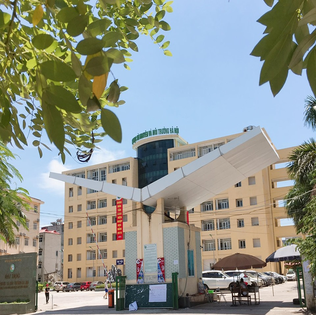
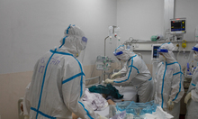
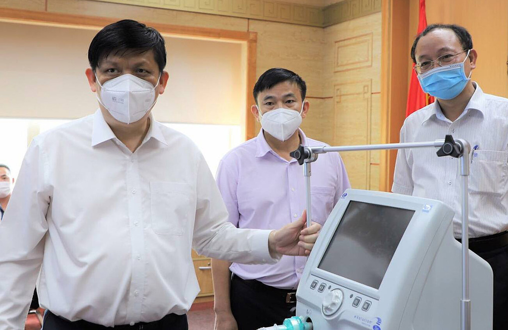

<
-
Covid 24h: Việt Nam vượt mốc 10.000 ca nhiễm một ngày
Số ca nhiễm cộng đồng trong nước ngày 19/8 là 10.639 ca, ghi nhận tại 37 tỉnh, thành, cao nhất từ khi dịch bệnh bùng phát đầu năm 2020 đến nay.
-

Thủ tướng: Quân đội chủ trì lo lương thực cho người dân TP HCM
TP HCM thực hiện Chỉ thị 16 nghiêm ngặt hơn theo phương châm “mỗi xã phường là một pháo đài”; trong đó quân đội sẽ chủ trì lo lương thực, thực phẩm cho người dân.
-
Chùm ca bệnh ở khu chung cư đông dân nhất Hà Nội
Chính quyền lập sở chỉ huy dã chiến tại sân chung cư HH4C khu đô thị Linh Đàm (quận Hoàng Mai) trong bối cảnh ngành y tế đã ghi nhận 27 ca dương tính tại đây.
-

200 máy thở chức năng cao được chuyển vào TP HCM
200 máy thở chức năng cao, 3.000 bộ dây thở sẽ được Bộ Y tế chuyển đến các Trung tâm Hồi sức tích cực tại TP HCM để điều trị bệnh nhân Covid-19 nặng
Tiếp nhận trang thiết bị y tế từ Tập đoàn Dầu khí Việt Nam sáng 20/8, Bộ trưởng Y tế Nguyễn Thanh Long cho biết ngành y tế "đã hết sức nỗ lực trong điều trị bệnh nhân nặng, kiểm soát và giảm tỷ lệ bệnh nhân Covid-19 tử vong", trong bối cảnh số lượng người nhiễm tăng nhanh trong thời gian ngắn tại TP HCM.
Bộ Y tế đã hướng dẫn phân 3 tầng điều trị bệnh nhân Covid-19. Riêng tại TP HCM, Bộ Y tế đang tập trung mở rộng nhanh các trạm y tế lưu động để quản lý, điều trị người bệnh, người nhiễm tại cộng đồng. Chiều nay, TP HCM sẽ khai trương một số trạm y tế lưu động.
Số giường bệnh ở tầng 2 cũng được mở rộng "để người bệnh Covid-19 nào cũng được tiếp cận giường bệnh". Hiện các cơ sở y tế thuộc tầng 2 được các bệnh viện của TP HCM đảm nhiệm điều trị.
Ở tầng điều trị cao nhất (tầng 3) TP HCM, Bộ Y tế thành lập 5 trung tâm hồi sức tích cực do các bệnh viện hạng đặc biệt của Bộ Y tế đảm nhiệm, với số lượng giường bệnh rất lớn.
-
Covid 24h: Việt Nam vượt mốc 10.000 ca nhiễm một ngày
Số ca nhiễm cộng đồng trong nước ngày 19/8 là 10.639 ca, ghi nhận tại 37 tỉnh, thành, cao nhất từ khi dịch bệnh bùng phát đầu năm 2020 đến nay.
-
Hà Nội: Bắt tạm giam bị can ‘ngáo đá’ đâm 7 người thương vong tại quán karaoke
Tối 25.2, trao đổi với Thanh Niên, đại tá Trần Mạnh Hải, Trưởng phòng Cảnh sát hình sự (PC02) Công an TP Hà Nội, cho biết cơ quan này đã thi hành lệnh bắt bị can để tạm giam đối với Lê Gia Bảo (20 tuổi, trú H.Thương tín, Hà Nội) để làm rõ hành vi giết người, sau khi bị can này được xuất viện.
Theo đại tá Hải, chiều 25.2, hết giai đoạn cấp cứu, Dũng được Bệnh viện Quân y 103 cho ra viện. Dũng được di lý về Công an tỉnh Hòa Bình ngay lập tức để thi hành lệnh bắt bị can để tạm giam.